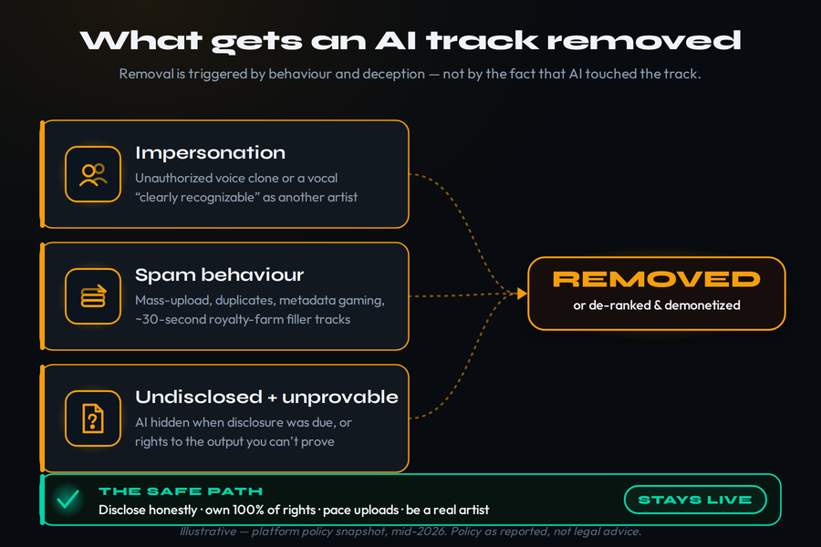
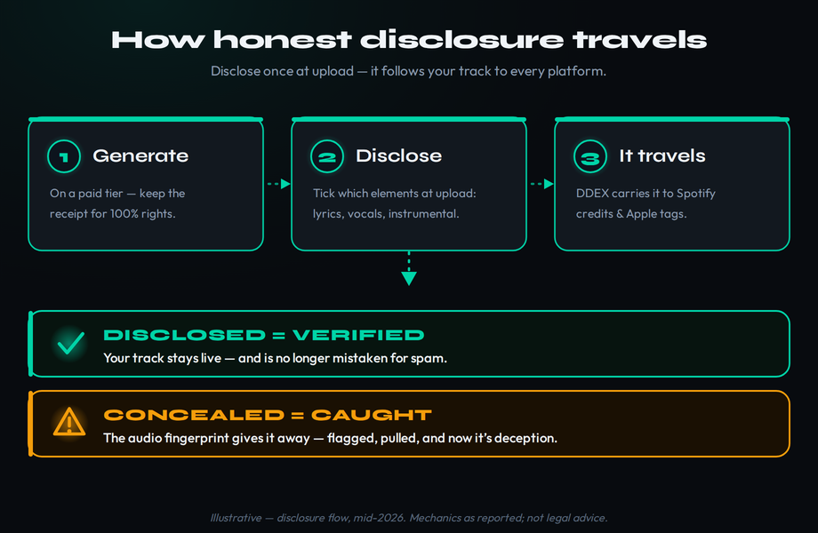

You finished a track. Part of it — maybe the vocal, maybe the whole thing — came out of Suno or Udio, and now you are staring at the upload button with a knot in your stomach. Will Spotify pull it? Will DistroKid ban your account and take down everything else with it? Is releasing this even allowed in 2026? The short version is reassuring and the long version is more useful, so this article gives you both. Yes, you can distribute AI music in 2026, and the major platforms are no longer trying to keep it off. What they are trying to do is make it honest and stop it from behaving like spam. The tracks that get removed almost never get removed for being AI. They get removed for impersonating a real artist, for behaving like a content farm, or for hiding what they are when disclosure was expected. Understand those three triggers and you can release with confidence instead of dread.
Distributing AI music is allowed across every major platform in 2026 — with conditions. Removal is triggered by behaviour and deception, not by the fact that AI touched the track. Own 100% of your rights, disclose honestly at upload, don’t mass-upload like a spam farm, and don’t clone a real artist’s voice, and your track stays live. Deezer is the strict outlier — it detects, tags and demonetizes fully-AI tracks — but even there the issue is fraud, not creativity. This is platform policy as reported in mid-2026, not legal advice; for copyright questions see can you copyright AI music.
The Short Answer: Yes, With Conditions
The fear that AI music is quietly banned is a hangover from 2023 and 2024, when platforms were caught flat-footed by a flood of generated uploads and the public conversation was all about deepfakes and fake Drake songs. The posture in 2026 is different, and it is worth stating plainly because so much outdated advice is still circulating. None of the major streaming services bans AI-assisted music outright. Spotify allows it. Apple Music allows it. Amazon, YouTube Music, TikTok and the rest allow it. Deezer allows it too — it just refuses to recommend or pay out on the fully-synthetic, fraud-driven end of it. The handful of platforms that genuinely ban AI-generated music, like Bandcamp, are deliberate human-first niches, not the mass-market services where most independent music earns its streams.
It also helps to retire a distinction that causes much of the confusion: “AI music” is not one thing. There is fully-generated music, where a model produces a finished master from a prompt, and there is AI-assisted music, where a generator contributes a part — a chord bed, a backing texture, a mastering pass — inside a record a human still shapes. The platforms care enormously about that difference even though the press rarely draws it. The 2025 episode that crystallized the panic, the “band” Velvet Sundown that turned out to be AI-generated and gathered streams before anyone realized, was a story about undisclosed fully-generated music passing as human — not about a producer using a generator honestly. When you read that a platform “cracked down on AI music,” it is almost always the fully-generated, undisclosed, fraud-adjacent end that is meant. Your disclosed, rights-clean, human-shaped release sits at the opposite end of that spectrum, and the rules are written to tell the two apart.
So if the platforms allow it, why do tracks still disappear? Because “allowed” was never the same as “unconditional.” A streaming service is not policing whether a synth, a stem separator, a mastering model or a generative engine touched your record. It is policing three much narrower things: whether you are pretending to be someone you are not, whether you are gaming the royalty system at scale, and whether you can actually stand behind the rights to what you uploaded. Every removal story you will read, once you strip away the panic, comes back to one of those three. The track that gets pulled is the unauthorized AI cover of a famous singer, or the four-hundredth thirty-second ambient loop from a faceless “artist” uploading by the thousand, or the release whose uploader never had commercial rights in the first place. The ordinary case — one producer, one finished track, honest metadata, real rights — is simply not what the enforcement machinery is built to catch.
That reframing is the single most valuable thing to carry into the rest of this guide. Stop asking “is AI music allowed?” and start asking “am I giving any platform a reason to act?” The first question has a settled answer. The second one is the one you actually control.
What Actually Gets Your Track Removed
There are exactly three triggers, and it helps to rank them by how reliably they get a track pulled. The first is the one with effectively zero tolerance; the second is behavioural and scales with how you act over time; the third is the quiet one that catches people who did everything else right but cannot prove ownership.

Trigger one: impersonation and unauthorized voice cloning. This is the hard line, and it is the same on every platform. When Spotify updated its policy on September 25, 2025 — the framework still in force in mid-2026 — it stated directly that unauthorized AI voice clones, deepfakes, and other vocal replicas or impersonations are not allowed and will be removed when detected. The test it applies is whether a vocal is “clearly recognizable as another artist’s voice.” If it is, you need explicit, documented consent from that artist, and claiming you are them does not help — an unauthorized clone is removed regardless of who uploads it. DistroKid’s own terms echo this: your music cannot mimic or copy someone else’s voice, likeness or identity without permission. This is the trigger with no grey area and the one that takes accounts down fastest, so the rule is simple. Generate original voices and original artists. The moment your track sounds like a specific famous person, you have moved from “AI music” into “rights infringement,” and the platforms treat that as a different and far more serious thing.
Trigger two: spam and mass-upload behaviour. This is the one most likely to catch an otherwise legitimate creator who simply uploads too aggressively. Spotify’s music spam filter — rolled out gradually through late 2025 and fully in place by 2026 — watches for behaviour, not for AI. It flags and stops recommending accounts engaged in mass uploads, duplicate tracks, metadata and SEO manipulation, and artificially short royalty-farming tracks of roughly thirty seconds designed only to trigger a payout. Spotify reported removing more than 75 million tracks it judged spammy in the year before the announcement, which tells you how industrial this problem became. The key word is behaviour. A single well-made AI track with honest metadata and a real artist profile does not look like spam. An account dumping fifty near-identical generated tracks a week with keyword-stuffed titles does, and the filter is built precisely for the second pattern. If you want one rule of thumb, it is this: release like a musician, not like a factory. Pace your uploads, vary your work, write real titles and credits, and you stay on the right side of a filter that is hunting for the opposite.
Trigger three: undisclosed AI and rights you cannot prove. This is the quiet trigger, and it is rising. Two things sit underneath it. The first is disclosure: as platforms and distributors roll out structured AI-disclosure fields, hiding AI involvement when you were expected to declare it becomes its own violation — and misrepresenting AI as human is treated more harshly than honest disclosure plus a detection flag. The second is rights. Most generators only grant you commercial rights to the output if you were on a paid tier at the time you generated the audio; free-tier output from the major AI music generators is typically restricted to personal, non-commercial use, which means uploading it for distribution breaks the generator’s own terms before any platform policy even applies. A track you cannot prove you own is a track a platform can pull the moment it is questioned, and because policy sweeps are retroactive, a release accepted last year can still be flagged this year. The defence against this trigger is documentation: a paid-tier receipt, honest disclosure, and a kept record of how the track was made. The AI Music Rights Navigator and AI Copyright Strength tools exist to help you map exactly this.
It is worth understanding how these triggers actually fire, because it explains why concealment is a losing strategy. The major generators leave consistent, measurable traces in their output — characteristic spectral fingerprints, phase-coherence quirks, high-frequency rolloffs — and detection vendors such as ACRCloud build classifiers that match those signatures against known models like Suno and Udio with high reported accuracy (more in how AI music detection works). Distributors and Deezer run this kind of detection at upload or ingestion. That is why “just strip the metadata” does nothing useful: removing an ID3 tag leaves the audio fingerprint completely intact, so the track still reads as AI to a classifier while you have now also created the undisclosed-AI problem that penalizes accounts. The system is not hunting for a label you can delete; it is reading the signal itself. The only move that genuinely lowers your risk is the honest one — disclose, prove your rights, and let detection confirm what you already declared.
The thirty-second filler tracks deserve a word, because understanding them clarifies what the spam filter is really defending. On most services a stream only counts toward royalties once it passes a minimum play length of around thirty seconds, so a fraudster generates thousands of barely-thirty-second tracks and runs bot streams against them to harvest micro-payouts at scale. That is the behaviour Spotify’s filter and Deezer’s demonetization exist to stop, and it is why short, near-identical, mass-uploaded tracks draw scrutiny while a normal-length, genuinely-listened release does not. If your catalogue happens to include short interludes or loops, the lesson is not to avoid them but to make sure your overall pattern — real lengths, real variation, real listeners — reads nothing like a farm. The filter judges the account’s behaviour, so give it an account that behaves like an artist’s.
The 2026 Pivot: From “Delete AI” to “Disclose AI”
To make good decisions about releasing, you need to understand the shift in industry posture, because it explains why the rules look the way they do. Through 2024 the implicit framing was binary — a track was either AI or not, and AI was a problem to be filtered out. That framing collapsed for a simple reason: it was unworkable. AI now sits on a spectrum across almost every modern workflow. A producer might generate a chord progression, write and sing their own lyrics over it, then master with an AI-assisted tool. Is that an “AI track”? Forcing that record into a yes-or-no box helps no one, and Spotify said as much when it introduced its disclosure standard: the point was to avoid a false binary and let creators describe how AI was used rather than whether it was present at all.
So the industry pivoted from deletion to transparency. The mechanism is a shared metadata standard developed through DDEX, the body that standardizes music credits, which lets a release carry structured AI-disclosure fields — typically separating AI use in lyrics, vocals, instrumentation or composition — that travel from your distributor to the platform automatically. Spotify began surfacing these as AI credits in a beta that launched April 16, 2026, starting with DistroKid uploads and meant to inform listeners rather than to filter or rank tracks. Apple Music began phasing in its own Transparency Tags in March 2026. The common thread is that disclosure is moving into the upload step itself, structured rather than scribbled in a freeform bio, and crucially that disclosing is positioned as safe. Spotify has stated it does not penalize or down-rank music for being AI-assisted. The risk in 2026 is not the AI label. The risk is concealment.
It is worth seeing what this looks like in practice. When a creator discloses on DistroKid and the release reaches Spotify, the AI credit can surface in the song’s credits panel — on mobile during the beta — telling a listener which elements involved AI. Spotify’s own policy lead has argued that if these structured credits had existed earlier, episodes like Velvet Sundown would have caused far less controversy, because the information would have been right there instead of buried in a freeform bio. Running alongside disclosure is a separate provenance layer — C2PA Content Credentials and watermarking standards like SynthID — that records how a file was made at the point of creation. Disclosure and provenance answer different questions (what you declare versus what the file itself carries), but they point the same direction: a 2026 in which honest, documented origin is the asset and concealment is the liability.
For a producer acting in good faith this pivot is genuinely good news, and it is worth naming the upside rather than only the rules. A transparent system that separates honest AI use from fraud is one in which your disclosed, well-made track is no longer tarred by association with the spam farms — the labelling that flags them is the same labelling that legitimizes you. It also means the goalposts hold still: instead of a vague fear that AI music might be banned at any moment, you have concrete, checkable conditions you can satisfy once and reuse on every release. The producers who struggle in 2026 are the ones still treating disclosure as something to dodge; the ones who thrive treat it as a one-time habit that buys lasting peace of mind.
That single sentence reorganizes everything. If disclosure is safe and concealment is the violation, then the optimal strategy for a good-faith producer is obvious: disclose fully, every time, and treat the disclosure field as protection rather than confession. The one honest caveat, worth holding lightly, is human curation. There is no public policy linking AI disclosure to algorithmic ranking, but editorial playlist curators do read song credits during their pitch review, and a disclosed AI vocal on a track being pitched as an intimate singer-songwriter cut may create friction with a human curator’s expectations. That is a discoverability nuance, not a removal risk — and it is a far smaller problem than getting caught hiding something.
Platform by Platform: Who Does What
The platforms differ enough that a single mental model would mislead you, so here is the map. The useful way to hold it is as a spectrum running from permissive-but-behaviour-policed at one end to aggressive-detection at the other.
![Platform posture spectrum for AI music in 2026 running from permissive to aggressive - Spotify allows disclosed AI but runs a behaviour spam filter that removed 75 million plus tracks and bans voice clones, Apple Music uses self-reported Transparency Tags from March 2026 moving from optional to required, and Deezer aggressively auto-detects and tags fully-AI tracks which are about 44 percent of daily uploads, cuts them from recommendations and demonetizes the roughly 85 percent of AI streams it finds fraudulent](../images/will-spotify-remove-my-ai-music-platform-spectrum-m.png)
Spotify — permissive, behaviour-policed. Spotify is the centre of gravity for most independent music and its stance is the one to internalize. It allows AI-assisted music, does not down-rank it for being AI, and rests its enforcement on three pillars from the September 2025 policy: a tougher impersonation rule, the behavioural spam filter described above, and DDEX-based AI disclosure now surfacing as listener-facing credits. What gets you pulled on Spotify is impersonation or spam behaviour — not the AI itself. The practical instruction is to disclose through your distributor, keep your metadata clean and honest, and avoid anything that looks like mass-upload manipulation.
Apple Music — disclosure becoming mandatory. Apple has no upload system of its own; you reach it through a distributor. Its contribution is Transparency Tags, phased in from March 2026, a metadata system that labels AI use in a track’s audio, composition, lyrics or artwork. For now the tags are self-reported by labels and distributors with no visible automated enforcement, and an omitted declaration is simply read as none. The direction of travel, though, is that Apple is moving these tags from optional toward required on new deliveries — so the habit to build now is accurate disclosure at upload, because the distributor you use is the one reporting on your behalf.
One figure puts Apple’s posture in context: it reported flagging roughly two billion fraudulent streams in early 2026 and claws back royalties on the streams it judges fake — the same anti-fraud logic Deezer applies, just less publicized. The limitation of Apple’s tag system is that it depends entirely on accurate reporting from the distributor delivering your music; Apple is not running its own detection on every file the way Deezer is. That makes your distributor’s disclosure flow the thing that actually determines whether your Apple release is labelled correctly — one more reason to choose a distributor whose AI handling you trust and to fill the fields in honestly.
Deezer — aggressive detection and demonetization. Deezer is the outlier, and the contrast is the whole story: policy is not the same as payout, and platforms differ. Deezer deployed its own AI-detection tool in early 2025 and is, by its own account, the first and only major platform to explicitly tag AI-generated music. The scale it reports is striking. As of its April 2026 update, Deezer says it receives almost 75,000 fully-AI tracks per day — roughly 44% of daily uploads, more than two million a month — up from around 10,000 a day a year earlier. It tagged over 13.4 million AI tracks across 2025. Detected fully-AI tracks are excluded from algorithmic recommendations and editorial playlists, and here is the part that matters for your wallet: Deezer reports that up to 85% of streams on fully-AI tracks are fraudulent, and it demonetizes those streams, removing them from the royalty pool. Note what this is and is not. Deezer is not deleting your honest AI-assisted track from the catalogue; it is detecting, tagging, de-prioritizing and refusing to pay out on the bot-driven fraud that clusters around fully-synthetic uploads. Deezer is now also licensing its detection technology to other companies, so its posture may quietly spread.
The listener data Deezer published alongside these figures is part of why the industry moved the way it did. In a survey it commissioned across nine thousand people in eight countries, about 97% of listeners could not reliably tell AI-generated tracks from human-made ones by ear, yet 80% said AI music should be clearly labelled and roughly 73% wanted to know when a platform was recommending fully-AI music. Read together, those numbers explain the whole disclosure pivot: if humans cannot hear the difference but overwhelmingly want to be told, the workable answer is labelling rather than removal. It also explains why detection matters to platforms even when the music is competent — the concern is transparency and royalty-pool integrity, not audio quality.
The rest, briefly. YouTube and YouTube Music lean on Content ID for rights conflicts and automated systems rather than specific AI tagging. TikTok, Instagram, Amazon Music and the other destinations a distributor delivers to accept disclosed tracks in the ordinary way. SoundCloud allows AI-assisted uploads but may remove tracks flagged for copyright or fraud. Tidal encourages disclosure and is developing its own detection. Bandcamp sits at the far end and has moved to ban AI-generated music outright as a human-first stance. The pattern across all of them is the same one you have now seen three times: disclosed, rights-clean, non-spammy AI music is fine; concealment, impersonation and fraud are not.
YouTube deserves a closer note because it works differently from the streaming stores. Music distributed to YouTube Music rides the same delivery as the others, but YouTube’s dominant control is Content ID, which matches your audio against a reference database to surface rights conflicts rather than to label AI as such. For AI music that means your exposure on YouTube is less about an AI tag and more about whether your track collides with someone else’s registered recording — another reason originality and clean rights matter more than the AI question itself. On TikTok, where your distributor places your track in the commercial music library, the same logic applies: the platform cares about rights and authenticity, and a disclosed, original, rights-clean track behaves like any other. Across every one of these surfaces the through-line holds — the platforms are policing deception and infringement, and honest AI-assisted music is simply not the target.
The Distributor Layer: Your First Gatekeeper
Before your track ever reaches Spotify or Apple, it passes through a distributor (for how distribution itself works, see how to distribute music), and the distributor is the first gatekeeper — with its own acceptance rules that are stricter than the platforms in some places and looser in others. Acceptance by a distributor is not the same as approval by a platform; a distributor can deliver a track that a streaming service later pulls. And there is a sharper risk here than at the platform level: a distributor ban can pull you from every service it delivers to at once, which is why your choice of distributor and your honesty with it matter so much.
It helps to understand why the distributor layer hardened in the first place, because it tells you what they are actually screening for. Three pressures converged. The first was sheer volume: by 2024 generators could produce commercial-sounding tracks in seconds, and distributors were processing AI uploads by the hundreds of thousands a month, much of it engineered to game pay-per-stream royalties. The second was rights complexity: early generators’ terms sometimes claimed sweeping licenses over generated output, which meant a distributor selling those tracks on an artist’s behalf could be sublicensing content the artist did not cleanly own. The third was that detection finally became cheap and accurate enough to deploy at scale. The result is a spectrum of strictness — services like AWAL and Amuse build in more human review and tend to catch AI content at upload, while DistroKid and TuneCore lean more on automated detection and post-upload sweeps. None of it is anti-AI; it is anti-fraud and anti-rights-mess, and a clean, disclosed release passes through all of it.
DistroKid is the most permissive of the majors and the de facto home for AI creators. Its Help Center allows AI-generated music on four conditions: you own 100% of the rights (including the legal right to distribute anything made with AI tools, samples or lyrics), no impersonation, no mass-generated spam, and no infringement. The rights condition has teeth — to claim commercial ownership of Suno or Udio output you generally must have been on a paid generator tier (such as Suno Pro/Premier or Udio Standard/Pro) at the time of generation. DistroKid runs automated AI detection on uploads; a disclosed track is verified and delivered normally, while undisclosed AI it detects is held for review and removed if confirmed, with repeat offenders risking suspension. In May 2026 DistroKid broadly rolled out its own AI-disclosure step asking which parts of a track — lyrics, vocals, instrumental performance, compositions — were AI, feeding the Spotify AI credits beta; it applies to new uploads and is self-reported. Pricing is a flat annual fee for unlimited uploads, recently quoted at $22.99/year on its Musician plan (a couple of sources cite figures up to roughly $25, so confirm at checkout), which makes it economical for anyone releasing volume. One caution worth repeating: DistroKid applies policy changes retroactively, so a track accepted under older rules can be flagged in a later sweep. The fuller picture is in our DistroKid review.
TuneCore sits a notch stricter. It accepts AI-assisted work but wants documentation — reporting around the use of licensed training data, attribution of where AI participated, and metadata that distinguishes, say, an AI instrumental under a human vocal. Several accounts describe it as not accepting fully-AI tracks at all. Its enforcement is often gentler in practice (pausing and asking you to resubmit rather than removing outright), and its per-release pricing differs from DistroKid’s flat subscription. Because the specifics here vary by source, verify TuneCore’s current help page before you upload there rather than treating any summary as settled. CD Baby is the strictest of the three: it positions itself as human-first and, by multiple accounts, will not distribute music that is entirely AI-generated with no significant human creative input. AI used as an assistive tool within a human-made record is fine; a fully-generated track is not its lane. CD Baby’s one-time per-release pricing suits a small number of considered releases rather than high-volume catalogues. The honest takeaway across all three: match the distributor to how your music is actually made, and never overstate your rights to clear a checkbox.
How to Disclose: The Mechanics
Disclosure has stopped being a vague good intention and become a concrete step in the upload flow, so here is what it actually looks like and how to do it cleanly. The whole thing rests on telling the truth in a structured field; the mechanics are simple once you know where to look.
It is worth knowing what the disclosure actually transmits, because it is more precise than a single “made with AI” flag. The DDEX-based standard treats AI use as a spectrum across separate elements — you can indicate AI in the lyrics, the vocals, the instrumental performance or the composition independently, and at different intensities from minor assistance to fully generated. That granularity is in your favour: a record with a human vocal over an AI-built instrumental reads very differently to a curator and a platform than a fully-generated track, and the standard lets you say exactly that rather than collapsing your work into a binary. Your distributor maps your answers into the feed and delivers them; you are not writing metadata by hand, only answering honestly in the upload form.

- Confirm your commercial rights first. Before anything else, make sure the AI tool you used grants you commercial and distribution rights for this track — on most generators that means you were on a paid tier when you generated the audio. Keep the subscription receipt. Free-tier output is usually personal-use only, and uploading it breaks the generator’s terms before any platform rule applies.
- Find the AI question at upload. On DistroKid and a growing number of distributors, the upload form now asks whether the release involves AI-generated content. It is a structured field, not a free-text note. Answer it; do not skip past it.
- Declare which elements involved AI. The DDEX-based standard separates AI use by element — lyrics, vocals, instrumental performance, composition. Tick the ones that apply. If your vocal is human and only the instrumental is AI, say exactly that; the granularity protects you and is more accurate than a blanket flag.
- Let the disclosure travel. Your distributor delivers those values to the platforms via the DDEX feed, where they can surface as Spotify AI credits or Apple Transparency Tags. You do not disclose separately on each service; you disclose once, at the distributor, and it propagates.
- Keep your own record. Save your prompts or session notes, your stems, and your generator receipt. If a track is ever questioned, a paper trail of how it was made is the strongest answer you can give — and it is exactly what a fraudulent uploader cannot produce.
The reason to do all of this honestly, rather than ticking the smallest possible box, is that the penalty structure is deliberately asymmetric. An honestly disclosed track that also trips a detector is treated as verified, not rejected. A concealed track that gets caught downstream is treated as deception — the thing every platform’s policy is actually built to punish. Disclosure is not the risk. It is the insurance. For how disclosure connects to the metadata layer underneath it, see music metadata explained.
The Survival Checklist
Pull everything above into three concrete checks you can run by stage — before you upload, on what you’ve already released, and as a permanent record. None of it is onerous, and together it moves you decisively out of the path of every enforcement system in this guide.
- Confirm you were on a paid generator tier when you made the track and save the receipt, then check there are no samples or lyrics you can’t clear — this is your 100%-rights proof.
- At upload, find the AI question and tick it honestly, declaring which elements (lyrics, vocals, instrumental, composition) were AI. Treat the field as protection, not confession.
- Look at your own account the way a spam filter would: real track lengths, varied work, honest titles and credits, a genuine artist profile. If anything reads like a content farm, fix it before you publish.
- Pick one live AI-assisted release and test it against the three triggers: is any vocal “clearly recognizable” as a real artist; does your upload pattern around it look like spam; can you actually prove the rights and disclosure?
- If it was uploaded before your distributor added an AI-disclosure step, check whether you can update the metadata — remember sweeps are retroactive, so an old undisclosed track is the one most exposed.
- Decide, honestly, whether anything in your back catalogue would fail a sweep today, and either bring it into compliance or take it down on your own terms rather than waiting to be flagged.
- For one release, open a single document and record every tool and version used, its licensing tier and your receipt, the date, your prompts if any, and every human contribution — performance, writing, arrangement, mixing.
- Complete your distributor’s AI-disclosure step, then verify with the AI Music DDEX Disclosure Checker that the AI credit is actually carried in the DDEX metadata rather than merely ticked in a form.
- File the receipt, the disclosure confirmation, your stems and session, and a one-line statement of whether the track is fully AI, genuinely AI-assisted, or human — so that if any platform questions it later you can answer in minutes with evidence instead of scrambling.
If you are choosing where to release, let the way your music is actually made pick the distributor: DistroKid for permissive, high-volume AI work with clean rights; TuneCore if you can document training-data and attribution and want a gentler enforcement model; CD Baby only if your work is human-created with AI as an assistive tool rather than the source. And whatever you choose, the release walkthrough itself — account setup, stores, metadata — is covered in how to release AI music; this guide is the policy-and-survival companion to it. And because raw generations rarely sit cleanly next to human releases, finish the audio properly before you release — see how to finish AI songs in your DAW.
If You’ve Already Been Flagged or Removed
If a track has already been pulled or flagged, the situation is more recoverable than it feels in the moment, and panic is the worst response. Start by identifying which of the three triggers you hit, because the right move depends entirely on the cause. If it was impersonation — a voice that resembled a real artist — that track is not coming back without documented permission, and the lesson is to keep that lane closed in future. If it was spam behaviour, the problem is usually your account pattern rather than any single track; slow down, clean up your metadata, stop the bulk uploading, and let your profile look like a musician’s again. If it was a disclosure or rights question, the fix is documentation: be ready to show your paid-tier receipt and your honest disclosure, and escalate through your distributor, which is your point of contact with the platform rather than appealing to the platform directly.
Set your expectations about the appeal itself. When a track is flagged or removed, royalties on it are typically withheld pending review rather than paid and later clawed back, and the timeline runs on the distributor’s and platform’s schedule, not yours — days to weeks is normal. The single thing that most improves your odds is the record you kept before any of this happened: a paid-tier receipt, your honest disclosure values, and your session or prompt history turn an appeal from “trust me” into “here is the documentation.” That is also the quiet argument for treating every release as if it might one day be questioned. The producers who recover fastest are the ones who never had to reconstruct their paper trail, because they already had it.
Two realities are worth absorbing so you are not blindsided. The first is that policy sweeps are retroactive: a track accepted under older rules can be flagged later when a platform tightens its stance or re-scans its catalogue, so “it was fine when I uploaded it” is not a guarantee it stays up. The second is that a distributor account ban cascades — it can remove you from every store at once — which is the strongest possible argument for never giving a distributor a reason to question you. Above all, do not respond to a takedown by trying to strip metadata or evade detection. That converts an honest mistake into deliberate concealment, which is the exact behaviour the whole system is designed to punish, and it leaves your spectral fingerprint intact anyway. The durable path back is always the same one that keeps you safe in the first place: disclose, own your rights, behave like a real artist, and keep the receipts. For the legal and copyright dimension underneath all of this — which is a separate question from platform policy — see can you copyright AI music and the ongoing AI music lawsuits of 2026.
Frequently Asked Questions
Not for being AI. As of its September 2025 policy — still in force in mid-2026 — Spotify allows AI-assisted music and says it does not down-rank tracks for being AI. It removes tracks for three specific reasons: unauthorized voice clones or impersonation, spam and mass-upload behaviour, and streaming manipulation its spam filter targets. A single honest, rights-clean, disclosed track from a real artist profile is not what that machinery is built to catch. Disclose at upload through your distributor and keep your metadata clean.
Yes. You upload through a distributor like DistroKid the same way you would any other track, and disclosed AI-assisted music is allowed. The conditions are that you own 100% of the rights to the output, you don’t impersonate a real artist, you disclose AI involvement where your distributor supports it, and you don’t behave like a mass-upload spam farm. Meet those and your track is delivered to Spotify and the other stores normally.
Spotify has stated it does not penalize or down-rank music for being AI-assisted, and its AI credits are positioned to inform listeners rather than to filter or rank. There is no published policy linking disclosure to algorithmic boost or decay. The one honest nuance is human curation: editorial playlist curators read song credits during pitch review, so a disclosed AI vocal on a track pitched as an intimate singer-songwriter cut may create friction with a curator’s expectations. That is a discoverability consideration, not a removal risk — and far smaller than the risk of being caught concealing AI.
Deezer is the strict outlier. It auto-detects fully-AI tracks, tags them, and keeps them out of algorithmic recommendations and editorial playlists. It does not delete an honest AI-assisted track from the catalogue, but it demonetizes streams it identifies as fraudulent — and it reports that up to 85% of streams on fully-AI tracks are fraudulent, mostly bot-driven. As of April 2026 Deezer says fully-AI tracks make up about 44% of its daily uploads. The takeaway: on Deezer the issue is fraud and recommendation, not creativity, and genuine listeners on a real release still count.
DistroKid accepts AI music under four conditions from its Help Center: you own 100% of the rights, no impersonation, no mass-generated spam, and no infringement. Bans come from violating those — especially undisclosed AI its detection catches, impersonation, or spam-pattern uploading — not from using AI honestly. To claim commercial rights on Suno or Udio output you generally need to have been on a paid tier when you generated the audio. Disclose at upload, keep your receipt, and pace your releases, and you’re fine. See our DistroKid review for the full picture.
Increasingly, yes — and you should regardless. DistroKid added an AI-disclosure step in 2026, Spotify surfaces AI credits via DDEX, and Apple Music’s Transparency Tags are moving from optional toward required on new deliveries. Disclosure is self-reported for now, but misrepresenting AI as human is treated more harshly than honest disclosure plus a detection flag. Practically: tick the AI field at upload, declare which elements (lyrics, vocals, instrumental, composition) were AI, and let your distributor carry it to the platforms.
Yes. Both platforms and distributors apply policy retroactively, so a track accepted under older rules can be flagged in a later sweep or re-scan. This is why “it was fine when I uploaded” isn’t a guarantee, and why keeping your rights documentation and honest disclosure on file matters even after release. If a live track is pulled, identify which trigger you hit, fix the underlying cause, and escalate through your distributor rather than trying to evade detection.
Distributing and monetizing AI music is permitted by the platforms when you hold the rights and disclose honestly — that is a platform-policy question, and the answer is broadly yes. Copyright is a separate, thornier matter: US and UK copyright offices have held that purely AI-generated works without human authorship can’t receive full copyright protection, which affects how strongly you can protect the track, not whether you can release it or make money with it. For that dimension see can you copyright AI music and is AI music legal. This article is platform policy as reported in mid-2026, not legal advice.